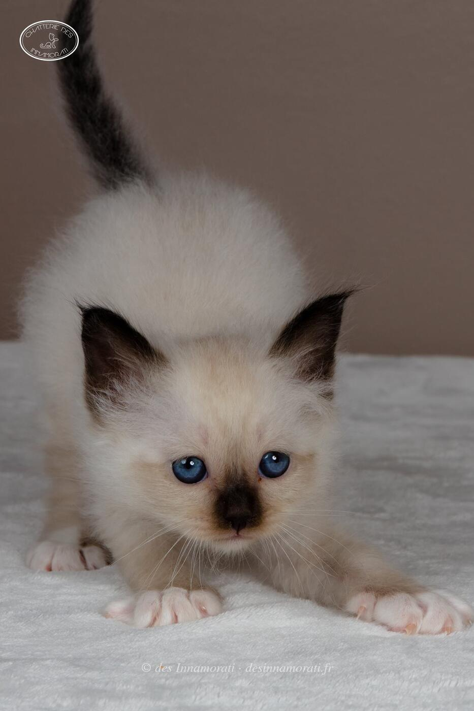
RobeMâle · Seal point
StatutAdopté
Album15 photos, de juillet 2017 à novembre 2018


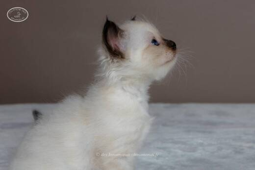

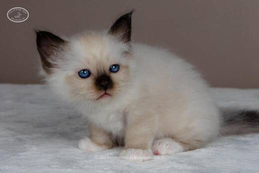

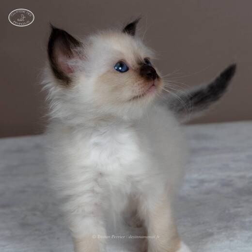

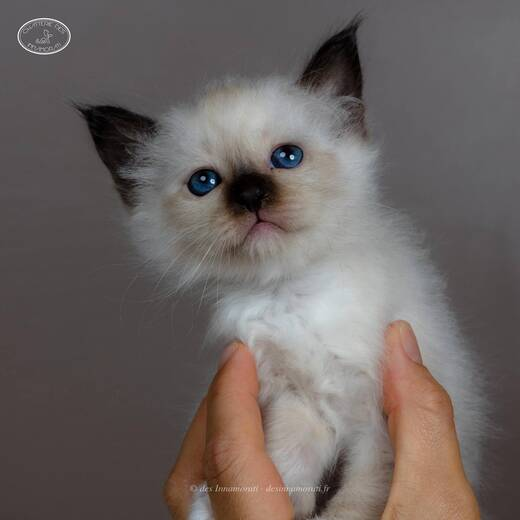

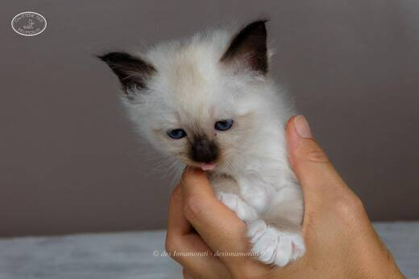

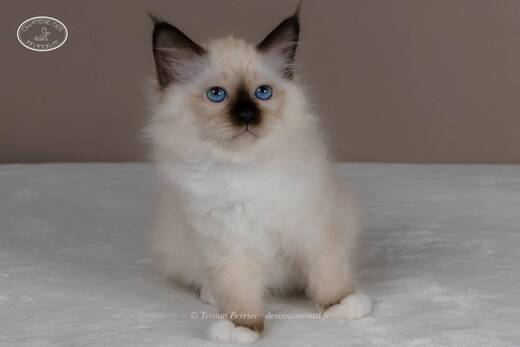

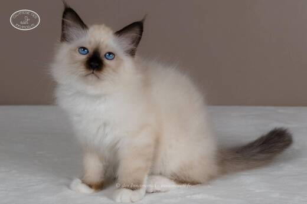

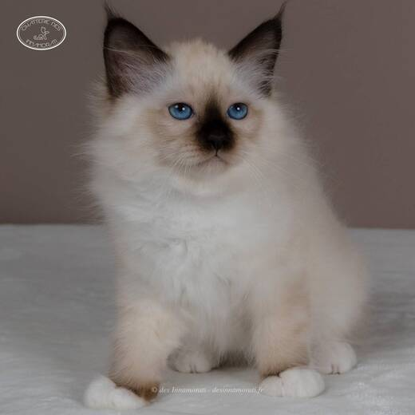

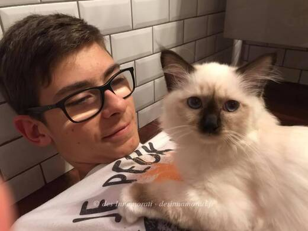

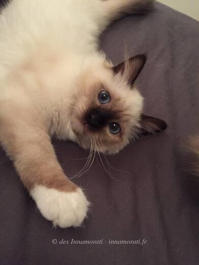

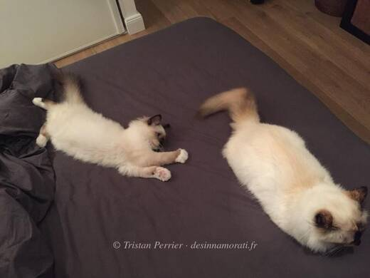

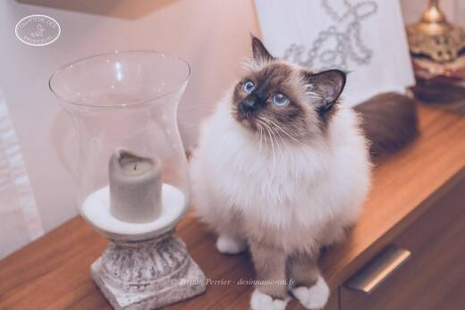

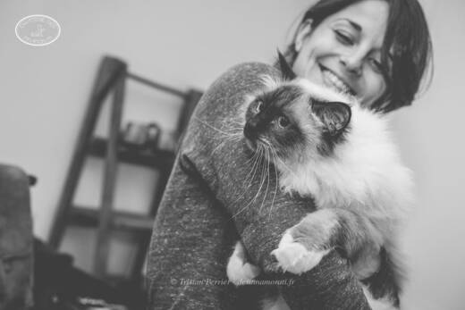

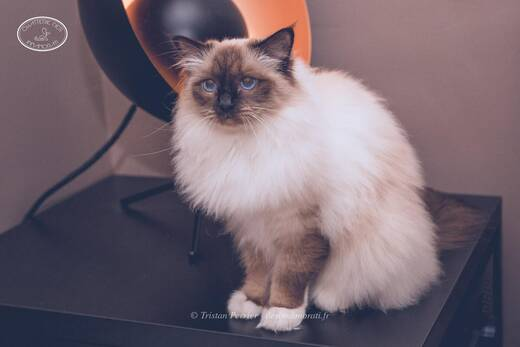
Photos réduites et marquées. Elles appartiennent à la Chatterie des Innamorati et ne peuvent pas être reprises dans une annonce.